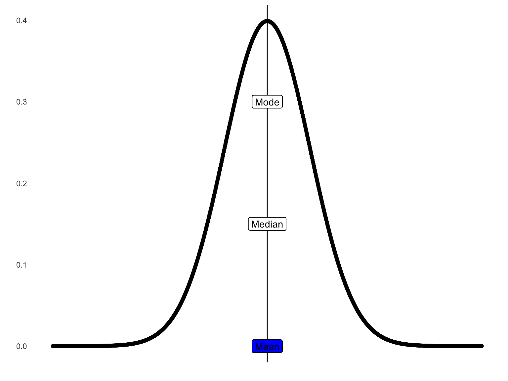
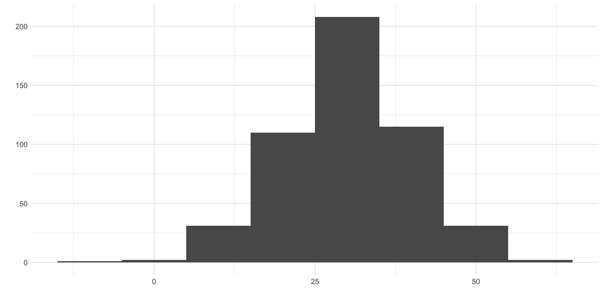
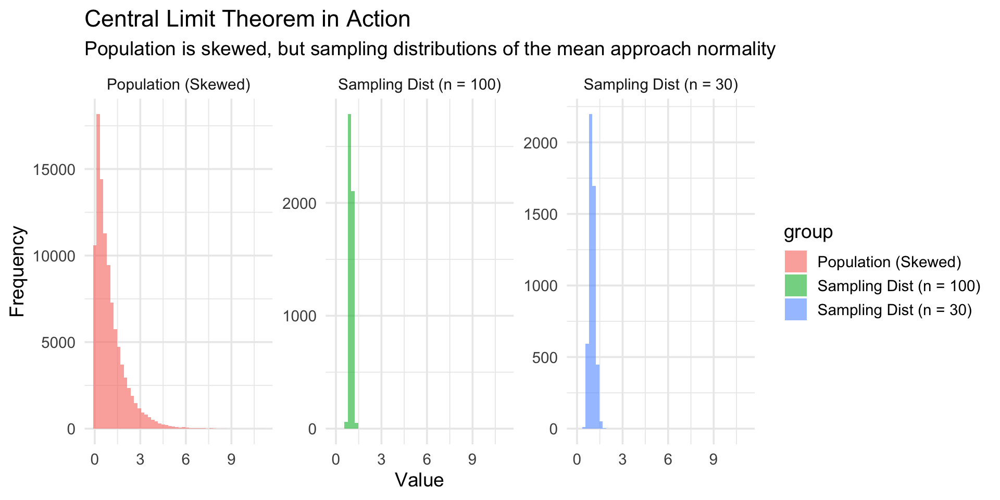
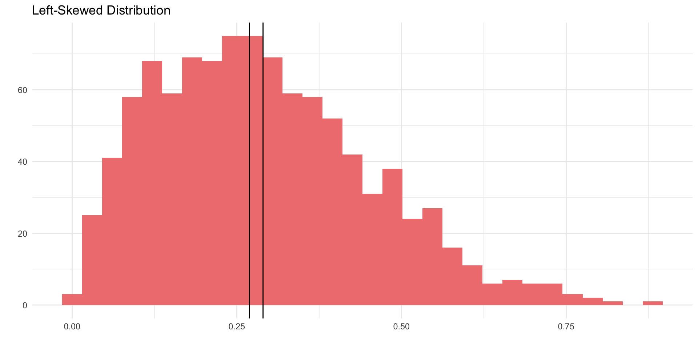
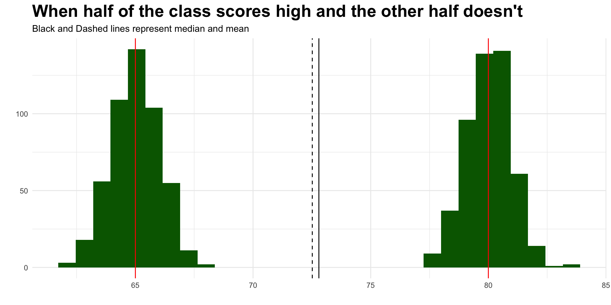
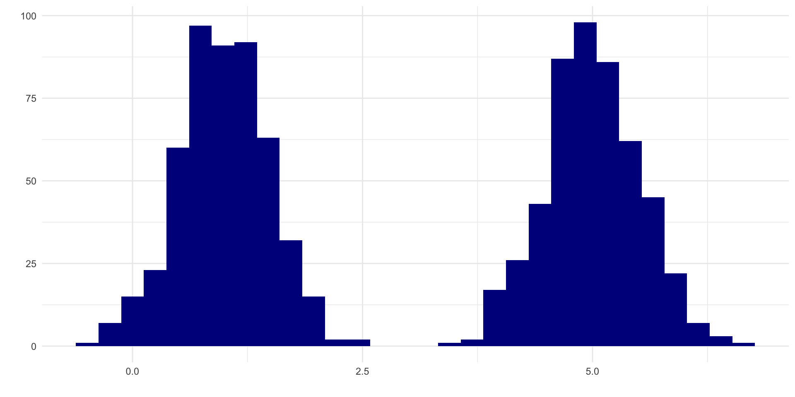
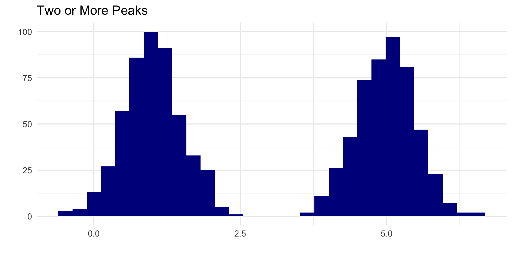
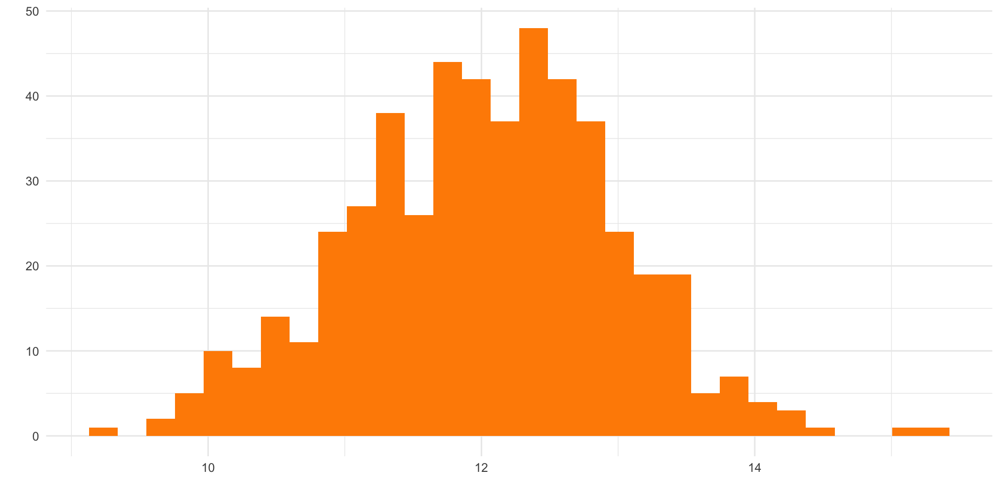
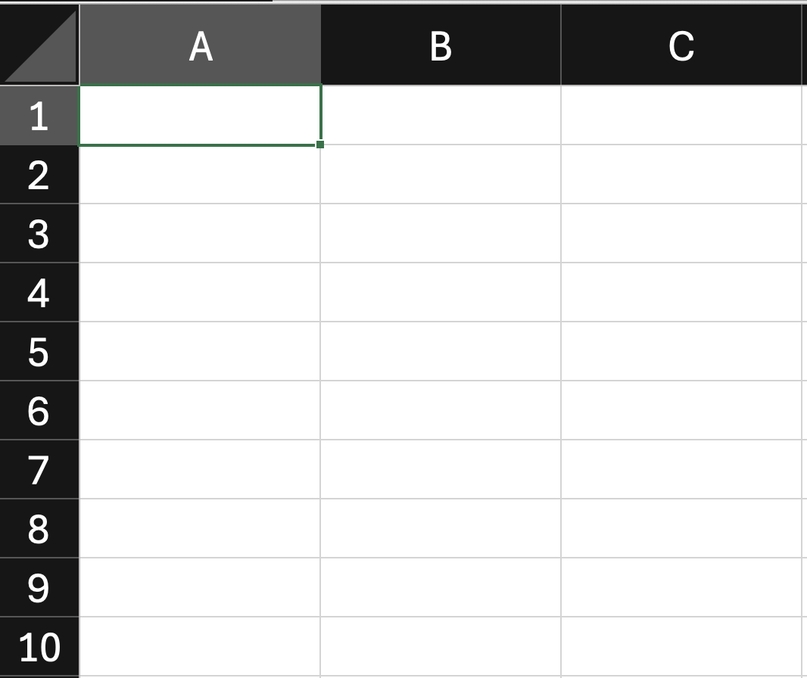

Measures of Central Tendency
PSY 348: Lecture 3
Dave Brocker
Farmingdale State College
Review
Scales of Measurement
Review
Scales of Measurement
Nominal
Ordinal
Interval
Ratio
Review
Statistical Terms
n = the number of people in the sample
x = one participant’s score
Review
Statistical Terms
What is a parameter?
What is a statistic?
Review
Statistical Terms
What is a parameter?
- Information that describes the population.
What is a statistic?
Descriptive Statistics
Describe the characteristics of the sample.
Descriptive Statistics
Think about our lab data.
How could we describe it?
Descriptive Statistics
Describe the characteristics of a sample in terms of:
Measures of Central tendency
Tell us about the mid-point (center) of a distribution.
Tell us about the mid-point (center) of a distribution.
Tell us most participants’ answer.
Measures of Central tendency
Mean
Median
- The middle number; obtained by ordering all values from lowest to highest and taking the middle (if n is odd or the average of the 2 middle if n is even)
Mode
- the most frequent answer; obtained by counting how many times each answer is given and taking the value that occurs most often
Measures of Central tendency
Standard Normal Distribution

Measures of Central tendency
In a normal distribution, the mean, median, and mode are equal to one another.
Mean = Median = Mode
Measures of Central tendency
The Mean is good for use in normal distributions

The mean
The mean is only helpful in a normal distribution, which you may have heard called a normal curve or bell curve.
We overwhelmingly use the mean, because in the social and behavioral sciences, we nearly always assume the distribution is normal.
Measures of Central tendency
A skewed distribution occurs when one side of the date gets cut off due to measurement limitation.

Measures of Central tendency
The Mode
Measures of Central tendency
The Mode

Measures of Central tendency
The Mode

When should we use…
Mean
- good for normal distributions
Median
- good for skewed distributions
Mode
- good for bimodal distributions
Central tendency: Which should we use?
Two or More Peaks
l
1 1.295370006
2 0.841319858
3 0.648674180
4 0.316206099
5 0.635596376
6 0.939237537
7 0.682396976
8 1.297351344
9 1.183750615
10 0.195630783
11 1.158665922
12 1.270852329
13 0.869336505
14 0.986752119
15 0.783880847
16 0.853306629
17 0.496479937
18 1.212603800
19 0.387591704
20 0.704767672
21 0.543180965
22 0.564541143
23 0.815722180
24 0.757373742
25 0.650019060
26 0.873283052
27 0.207551196
28 1.055519184
29 1.315923079
30 0.358450654
31 0.293449689
32 2.115998555
33 1.119753620
34 1.026596463
35 0.900746272
36 1.246323881
37 1.018620531
38 0.727044024
39 0.783761966
40 0.827757647
41 0.840165302
42 0.624150563
43 1.537050762
44 1.046911078
45 0.613466585
46 1.295624367
47 1.175114239
48 0.931210209
49 1.200440934
50 0.546810502
51 0.900579874
52 0.500422648
53 0.408094783
54 0.834300675
55 1.084012401
56 0.543497235
57 0.912470936
58 0.084776940
59 0.776631374
60 1.585333637
61 0.424292051
62 0.403533990
63 0.890069271
64 1.267335366
65 1.618054583
66 2.326870364
67 1.400446619
68 1.335726763
69 2.013962059
70 0.849537848
71 0.893325297
72 1.126635075
73 0.289955978
74 0.082281672
75 1.903394687
76 0.712502129
77 0.771059572
78 0.503522117
79 1.072036298
80 1.295570261
81 0.885694381
82 1.007352347
83 1.475696457
84 0.994615961
85 0.719328264
86 0.969694959
87 0.578836827
88 1.050944042
89 0.551037108
90 1.696962723
91 -0.243261952
92 1.200647068
93 0.755986389
94 1.993574404
95 0.882768285
96 1.240918680
97 1.193446985
98 1.123836205
99 1.259059918
100 1.998706867
101 1.463754412
102 1.098212074
103 1.895133109
104 1.291598875
105 1.325166800
106 1.622515074
107 1.080553313
108 1.362745346
109 0.862759891
110 1.062418033
111 1.019821314
112 0.680133481
113 2.017326609
114 0.720551200
115 0.822110295
116 1.662208695
117 0.989688885
118 1.584063214
119 0.696321440
120 0.993579170
121 0.874531561
122 0.515443180
123 0.848344023
124 0.672366430
125 1.428723662
126 0.854508208
127 0.958609398
128 0.586077654
129 1.107599503
130 0.194031822
131 -0.474935892
132 1.940053172
133 1.378630849
134 1.317364317
135 -0.118254133
136 1.338564559
137 1.259907135
138 0.961172479
139 1.412519381
140 1.560284515
141 0.938918200
142 1.972668539
143 1.494181350
144 1.612192691
145 0.842441193
146 0.934438572
147 0.538707289
148 1.203684543
149 1.132005717
150 1.045641777
151 0.659656286
152 0.884015252
153 1.992555891
154 0.535420321
155 0.796954884
156 0.298283723
157 0.379635466
158 0.856617399
159 0.804356349
160 0.691549218
161 0.613077845
162 0.901686538
163 1.567010272
164 0.821099407
165 0.358398068
166 0.465474098
167 -0.002173825
168 0.144741839
169 0.626289909
170 0.511792269
171 0.425486945
172 1.994621827
173 1.875565541
174 2.282204650
175 1.388247951
176 0.919375728
177 0.478369653
178 0.449616869
179 0.751563026
180 1.640260463
181 1.333235281
182 1.444750099
183 0.906439286
184 0.223181829
185 1.163201336
186 0.892694014
187 0.848020846
188 2.092086614
189 1.434845642
190 0.885796898
191 0.048276790
192 0.856679265
193 1.495194460
194 1.186410496
195 1.136053684
196 1.522546820
197 0.915495006
198 0.827098987
199 0.873016933
200 1.367256464
201 0.865325935
202 1.380150571
203 0.385908190
204 0.364467489
205 1.063691804
206 1.380191579
207 0.796173542
208 0.711289328
209 -0.419688083
210 1.187160437
211 0.548572511
212 1.201287453
213 1.713605861
214 0.752040477
215 1.348362691
216 0.923727113
217 1.184302318
218 0.422100307
219 1.208911797
220 1.652480772
221 1.898355928
222 0.406309673
223 1.266842504
224 0.745987915
225 1.261360314
226 0.910768069
227 0.875983367
228 1.341049748
229 1.373100763
230 1.139538519
231 1.232024691
232 1.189230206
233 1.139187001
234 1.045615080
235 1.457805113
236 1.354949646
237 1.396966419
238 1.553484249
239 1.274668667
240 0.923500836
241 0.455264788
242 0.755983773
243 0.565022541
244 0.850745707
245 0.737352714
246 0.901657092
247 0.488050041
248 0.688848942
249 1.177793579
250 1.106802977
251 0.797965159
252 1.506411166
253 0.179435279
254 1.241379304
255 1.784915284
256 0.796076121
257 1.193792459
258 0.720855998
259 0.988992482
260 1.407801731
261 0.542992759
262 0.722589601
263 1.266111674
264 1.207854845
265 1.403429591
266 1.626374098
267 1.384926371
268 0.461183696
269 1.076890683
270 0.800456290
271 0.997071251
272 1.458681178
273 1.138077722
274 1.077594180
275 0.939942627
276 1.198509252
277 0.410687406
278 0.789225988
279 1.808288018
280 1.308061422
281 0.519102987
282 0.385721670
283 0.520334873
284 1.290078428
285 1.216579482
286 0.715708848
287 0.815657830
288 1.489114035
289 0.846463195
290 0.970795360
291 1.176266874
292 0.908836185
293 0.632486798
294 0.793529362
295 0.459499782
296 1.234656308
297 1.666020061
298 1.122131318
299 1.406364613
300 0.674432488
301 0.929845612
302 0.931943922
303 0.284679687
304 1.044446471
305 1.239618629
306 1.341703228
307 1.657827020
308 0.263675282
309 1.308825730
310 1.358537036
311 0.894987096
312 1.301229666
313 0.292733763
314 1.107197337
315 -0.564544096
316 1.156029152
317 1.800781728
318 1.770993514
319 -0.329834690
320 1.267513421
321 0.825139503
322 0.987495971
323 -0.108066728
324 1.192520251
325 0.736639656
326 1.186944744
327 0.904390900
328 0.487281222
329 1.166598168
330 1.297534536
331 1.027159644
332 1.283550794
333 0.767994686
334 1.642400408
335 0.821013859
336 0.710174055
337 1.520796391
338 1.557441091
339 1.340327819
340 1.110253330
341 1.797442992
342 0.494679553
343 1.568884996
344 1.857196917
345 1.027304787
346 1.292861002
347 1.304851097
348 1.596791004
349 0.570594787
350 1.447853097
351 0.145526467
352 2.038451773
353 0.714330120
354 0.841904517
355 1.129442588
356 0.374843970
357 0.868552578
358 1.030743720
359 0.830016256
360 2.013147031
361 0.106619675
362 0.947305792
363 1.589423644
364 0.581917598
365 0.930524439
366 1.971642448
367 0.066327201
368 0.598201067
369 0.400795719
370 1.314760692
371 0.566935739
372 1.233902801
373 0.677096809
374 0.923737220
375 1.428107440
376 1.068501877
377 0.029647273
378 0.732056266
379 1.356797549
380 1.930074160
381 0.442586928
382 0.885689482
383 0.959205060
384 0.633716756
385 0.308683588
386 1.919398300
387 1.739167230
388 0.296606642
389 0.058013934
390 0.861316886
391 1.215213903
392 0.935606666
393 1.564632298
394 0.876735753
395 0.417226092
396 1.759941146
397 0.882986628
398 0.858013206
399 0.868420858
400 1.028002152
401 -0.159330945
402 1.341648566
403 1.360615949
404 1.314622595
405 0.794437190
406 1.049654213
407 0.282543664
408 1.179890177
409 0.591472321
410 1.658446462
411 0.537088216
412 -0.029542691
413 1.086329592
414 0.184721934
415 0.536076690
416 1.402016145
417 1.936165874
418 0.868660955
419 1.485825649
420 0.311318069
421 1.865250657
422 0.997456409
423 0.610059878
424 1.198771961
425 0.595375532
426 1.025161515
427 1.050886021
428 1.584561773
429 0.716704453
430 0.812329856
431 1.061996769
432 1.448687239
433 1.947798497
434 1.791093228
435 1.480127677
436 0.048461511
437 1.473662377
438 1.376710186
439 0.651101436
440 0.717534894
441 0.315424828
442 0.993726513
443 1.045315008
444 0.123224770
445 0.209331184
446 1.087242539
447 0.486558031
448 0.850391839
449 1.503858343
450 0.787044399
451 1.063532157
452 1.307885512
453 0.437671144
454 1.621338511
455 1.458507679
456 1.636482646
457 0.786899449
458 0.267840205
459 1.255581475
460 1.309266126
461 2.270184312
462 1.859746463
463 0.767558618
464 0.496611355
465 1.310494482
466 1.996621246
467 0.408433017
468 0.609749196
469 1.873847494
470 1.918593491
471 1.097278207
472 0.189884858
473 0.728714736
474 1.583709420
475 2.076866787
476 0.992061730
477 0.684277433
478 1.152643658
479 1.072439302
480 0.545332347
481 1.295942087
482 1.695222154
483 1.006560214
484 1.312875100
485 1.126042517
486 1.230783047
487 0.893188455
488 1.598938029
489 1.115901567
490 0.748579274
491 1.315228565
492 1.478648763
493 0.962758568
494 -0.339082205
495 1.818082193
496 0.624684726
497 0.825428046
498 1.809315370
499 0.050980056
500 0.446727820
501 4.625274646
502 4.343559315
503 5.551644162
504 5.632248067
505 5.250438066
506 4.780297087
507 4.788160012
508 4.715963464
509 4.737646817
510 5.241412797
511 5.454631683
512 4.771711156
513 5.159495199
514 3.807103625
515 5.037918487
516 4.560779072
517 5.549266590
518 5.592912204
519 3.901752309
520 5.461158759
521 4.717135803
522 4.918029489
523 5.449250414
524 5.344583660
525 4.590488377
526 5.160033378
527 4.766462384
528 5.625927668
529 4.214263707
530 5.409877226
531 5.695548044
532 3.695237495
533 5.323873298
534 4.818510209
535 5.055110876
536 4.864962926
537 5.346048653
538 5.464140153
539 5.296565051
540 4.946853616
541 4.787935436
542 4.929843124
543 4.886354424
544 5.102530969
545 4.587702256
546 5.292290292
547 4.500850667
548 4.257859247
549 5.128888742
550 5.207645002
551 5.512709786
552 5.363038034
553 5.109893688
554 5.345799806
555 4.509751132
556 4.429695148
557 4.392256002
558 5.022364268
559 5.330735187
560 5.453196124
561 5.741850727
562 5.164600294
563 4.935904275
564 4.669361529
565 5.127034110
566 4.967822363
567 4.837435342
568 4.661488467
569 4.497067551
570 4.508526501
571 5.734415181
572 5.125308917
573 4.784964122
574 4.210404460
575 5.096431868
576 4.751349972
577 4.957054224
578 4.896425622
579 5.388027694
580 4.965682370
581 4.910999291
582 6.186419239
583 5.543602099
584 5.065009116
585 4.634401002
586 5.589564842
587 4.533675222
588 4.975967913
589 5.426292874
590 4.794343942
591 4.816395088
592 5.220154571
593 5.069735566
594 4.875373694
595 4.895312983
596 5.125449613
597 5.233364334
598 5.647130908
599 4.790383860
600 5.658329726
601 4.267391822
602 4.677456715
603 4.323549075
604 5.154720781
605 5.210430690
606 4.316987291
607 5.023932236
608 4.543066863
609 5.246921428
610 4.222543080
611 5.432358658
612 4.977796034
613 4.482028653
614 4.958538944
615 4.867166487
616 4.817769313
617 4.251325454
618 4.707394922
619 4.913336189
620 4.258373896
621 5.151180693
622 5.686558193
623 5.391043600
624 4.600733521
625 4.671566891
626 4.767153873
627 5.302946708
628 4.980240231
629 4.527471749
630 4.244007695
631 5.279648581
632 4.478018275
633 5.248506036
634 5.036535458
635 5.360885507
636 5.547085751
637 4.288352805
638 5.511151829
639 5.343907539
640 4.846272555
641 4.990125472
642 5.244199193
643 5.330250405
644 4.142978336
645 5.729428491
646 4.296052258
647 3.959417940
648 5.477119693
649 4.244203873
650 4.887928433
651 4.326735552
652 4.102707845
653 4.778943002
654 5.323556012
655 5.157949690
656 4.678763092
657 4.992121476
658 4.950652426
659 4.988237756
660 4.776980852
661 5.180474951
662 4.458648745
663 5.188758698
664 4.830296148
665 4.832200704
666 5.352902047
667 4.786214089
668 4.507324874
669 4.398480829
670 5.334516372
671 3.833356311
672 4.791542213
673 5.090728194
674 4.312519796
675 5.003481479
676 5.335120009
677 4.087785706
678 4.556393021
679 5.881131222
680 4.672687789
681 4.516952770
682 4.571140719
683 4.782840300
684 5.092959943
685 4.648166367
686 5.100859800
687 5.350976374
688 5.168090756
689 5.374912851
690 4.599558832
691 4.938629303
692 5.332144296
693 5.027478942
694 5.106347517
695 5.025430340
696 5.091458425
697 4.987663536
698 4.450304501
699 5.086999666
700 4.772316639
701 5.717889431
702 4.735204915
703 5.076075698
704 4.013369338
705 4.670560620
706 4.585773676
707 5.615851772
708 4.924457025
709 5.072478137
710 5.150148456
711 4.734444260
712 5.150357571
713 5.753312020
714 5.308496355
715 5.357200029
716 4.582738587
717 5.089523770
718 5.146673218
719 4.672449185
720 5.058710274
721 5.986764045
722 4.512733384
723 5.276473826
724 4.463089435
725 5.175998385
726 4.479087612
727 5.295175576
728 4.365780051
729 5.010238832
730 5.670658129
731 4.888762956
732 4.946801203
733 5.702095156
734 6.018148277
735 6.241552556
736 4.803187338
737 4.472431705
738 5.325577171
739 5.217797722
740 5.642604117
741 5.075106684
742 5.080409680
743 5.756879317
744 5.080995385
745 5.341117563
746 5.242258772
747 4.977764040
748 4.732594418
749 4.831226078
750 4.025736516
751 5.639227508
752 4.202444585
753 4.704649758
754 4.814834477
755 5.602764178
756 5.028925352
757 5.472112645
758 4.852884075
759 5.835684224
760 5.243498909
761 5.273647109
762 5.438765492
763 4.258883874
764 4.994737994
765 5.107212124
766 4.616635376
767 5.006085260
768 4.639329835
769 5.109873715
770 4.107585888
771 5.142204794
772 4.681863253
773 5.469669949
774 4.013444751
775 5.021256655
776 4.889545179
777 5.470261807
778 4.209994446
779 4.725634492
780 5.355930759
781 5.306436811
782 5.178167054
783 5.144285154
784 4.165729143
785 5.425531099
786 5.107888032
787 4.092646457
788 4.913274335
789 5.476883881
790 5.351893792
791 4.684357525
792 5.453795884
793 4.801518337
794 5.190979483
795 5.464266351
796 5.195288044
797 4.673648726
798 5.409991183
799 5.738715043
800 4.535401783
801 4.908902833
802 5.501829236
803 4.574004056
804 4.140312099
805 4.752650482
806 5.533244889
807 4.319076184
808 4.875848085
809 5.480965039
810 5.023463727
811 5.283459527
812 5.811990080
813 5.450385606
814 5.295595326
815 5.245493204
816 4.420791698
817 5.419598447
818 5.271053311
819 5.201810367
820 5.028600172
821 4.364476058
822 5.076796876
823 5.627478048
824 4.694143520
825 4.099575376
826 5.919013935
827 4.717861032
828 5.570178300
829 5.312026735
830 5.828868050
831 4.978954708
832 4.849777736
833 5.866128990
834 6.078264912
835 5.159259440
836 5.084923523
837 5.371174749
838 4.663731655
839 5.248913076
840 4.505193999
841 4.851260193
842 5.397441767
843 4.618523295
844 5.425430312
845 5.251089530
846 5.716871268
847 6.082831495
848 4.712312121
849 5.195319416
850 5.779331891
851 5.099522714
852 4.673093499
853 4.501214597
854 5.700222152
855 6.299745853
856 4.476349858
857 5.055268652
858 4.215965427
859 5.034835603
860 4.846410068
861 4.993973357
862 6.447427195
863 4.300659761
864 5.216056701
865 5.916328858
866 4.694488728
867 4.590328643
868 5.024154730
869 5.650275685
870 4.828437580
871 4.487104365
872 5.035274271
873 3.991090366
874 4.262272440
875 5.543231399
876 5.229407787
877 3.913001785
878 5.308808129
879 3.847602324
880 4.776515644
881 5.149745338
882 4.285762707
883 5.633748742
884 5.607252895
885 4.662572034
886 5.560510955
887 5.098274888
888 5.325056594
889 5.335502094
890 4.357921117
891 3.986945209
892 6.102663032
893 5.115694965
894 5.187821130
895 4.403515741
896 5.566274921
897 5.919738397
898 5.763935052
899 3.988186489
900 4.479746001
901 5.048895801
902 5.348420400
903 4.728055742
904 4.570725349
905 5.114892968
906 4.528678424
907 6.021752151
908 4.087252300
909 5.254396104
910 4.001836397
911 4.752838541
912 5.742168642
913 5.560884287
914 4.300069676
915 4.261950982
916 5.029052920
917 4.523511681
918 5.202885057
919 4.508030758
920 4.194938492
921 4.784915616
922 4.387894684
923 5.543320984
924 4.832597210
925 4.981079648
926 5.690295665
927 5.928910621
928 4.973524891
929 5.166668100
930 5.654548841
931 4.912768878
932 4.478187067
933 5.497100183
934 4.237682730
935 4.877373435
936 4.798922461
937 4.738627832
938 3.623195623
939 4.706549879
940 5.633156465
941 4.765564672
942 4.690478407
943 4.666930259
944 4.562630353
945 5.073010852
946 5.296390354
947 5.724352875
948 4.216954356
949 5.197676665
950 4.923383020
951 5.142643009
952 4.484141366
953 5.022755709
954 4.423193106
955 5.329851638
956 4.526905092
957 5.031773639
958 3.936383662
959 5.163483431
960 5.553861449
961 5.383081438
962 5.526836491
963 4.322028601
964 4.915349307
965 4.965149506
966 5.360097824
967 4.916109062
968 4.898360542
969 5.839064125
970 5.545467564
971 4.121777685
972 4.807694604
973 4.503920906
974 6.485792517
975 4.752832734
976 5.574019892
977 5.048135625
978 5.054415105
979 5.247618475
980 4.928678251
981 5.416468498
982 5.279911887
983 4.157452027
984 4.722193844
985 4.738323438
986 4.746947837
987 5.532642443
988 5.743513517
989 4.539099525
990 5.270717733
991 4.415116037
992 4.721459812
993 5.149232772
994 4.905538605
995 4.659774898
996 4.371275729
997 4.844116732
998 5.026249023
999 5.281116906
1000 4.562091588

Central tendency: Which should we use?
Slide to the Left!

Central tendency: Which should we use?
Looks Normal to Me

Measures of Central tendency:
The mean
We use the mean most often in social science, because many of our statistical tests can only be used on normal distributions.
We assume normality of the distribution, and use the mean.
Calculating measures of central tendency
Calculating The mean
x = 4,2,5,6
\(\frac{\Sigma(x)}{n}\)
\(\Sigma(x) = 4 + 2 + 5 + 6 = 17\)
\(\frac{17}{4} = 4.25\)
Calculating measures of central tendency
Calculating measures of central tendency
Calculating The mode
Put all x values in order from smallest or largest or largest to smallest. \(x = [3,2,1,5,3,7,8,3,2,4,1]\)
Find the number or numbers that repeat the most. \(x = [1,1,2,2,3,3,3,4,5,7,8]\)
There can be more than 1 mode.
Using Excel
Excel Practice

Excel Practice
Open our Class Data in Google Sheets.
Excel Practice
Adding & Summing
Subtracting
Multiplying
Dividing
Squaring
Review
When do we use the…
Review
How do we calculate the…
Review
• Explain this formula to me.
\(\sum(x)\)
Review
When are the mean, median, and mode the same (equal to one another)?